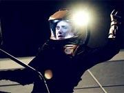
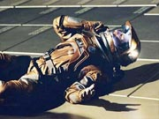
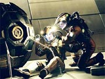

|
MANCHETE
DO EPISDIO
Introduo
de Romulanos no sculo 22,
alm de muito fraca, problemtica
Episdio
anterior | Prximo
episdio
Sinopse:
O tenente Reed est bastante nervoso ao ser convidado para uma refeio com seu capito. Archer quer apenas melhorar seu relacionamento pessoal com o oficial de armamentos, mas Malcolm tem srias dificuldades para interagir de forma no-profissional com seu comandante.
Por sorte, a refeio interrompida pela descoberta de um sistema solar no-mapeado, com um planeta classe M. Archer ordena que a Enterprise v investigar, mas o mundo totalmente desabitado. Esse no seria um grande problema se uma sbita exploso no acontecesse, abrindo um enorme rombo no casco da nave e colocando todos em alerta.
Hoshi Sato ferida e levada enfermaria. Diversos outros tripulantes esto seriamente feridos, e algumas partes da nave perderam a pressurizao. Ningum sabe ao certo o que aconteceu, at que os sensores conseguem identificar uma mina acoplada ao casco da Enterprise, que acabou de se descamuflar.
 Logo, a tripulao conclui que a causa para o rombo no casco foi a coliso com outra das minas. Archer suspeita que a Enterprise esteja no meio de um campo minado. Ele pede que T'Pol recalibre os sistemas utilizados recentemente para a deteco de naves Sulibans camufladas para poder detectar outras minas. Com as modificaes, os temores de Archer so confirmados.
Enquanto isso, h uma mina prestes a explodir presa no casco. Se ela detonar, causar a total imobilizao da Enterprise. Por isso, imperativo desativ-la. Reed se voluntaria como o oficial ideal para a misso. Archer hesita um pouco, mas concorda. O oficial de armamentos ento coloca um traje espacial e vai ao casco exterior da Enterprise.
Na ponte, Archer quer um plano B. Ele pergunta a Tucker sobre a possibilidade de destacar apenas a placa do casco em que a mina est presa. O engenheiro confirma que possvel, com trs a quatro horas de trabalho, mas no recomendvel. Archer opta ento por seguir com o plano original do tenente Reed.
O tenente inicia o trabalho de estudo e desativao da mina, quando um dos ganchos de fixao da arma se desprende e perfura a perna de Reed, prendendo-a junto ao casco e mina. Ao saber do ocorrido, Archer imediatamente decide ir ao resgate de seu oficial. Tucker se oferece para ir em seu lugar, mas o capito ressalta a importncia dele a bordo.
Archer leva ento um poderoso analgsico do doutor Phlox para Reed e pretende desprend-lo do casco, mas descobre que no pode faz-lo, pois a haste de fixao que perfurou a perna do tenente contm sistemas que ativariam a mina caso fossem danificados. Reed se oferece para ter o membro amputado, mas Archer se recusa.
 O capito decide ento desarmar a mina ele mesmo, com as instrues do tenente. Enquanto isso, uma nave se descamufla perto da Enterprise e abre frequncias de saudao. O tradutor universal no funciona e a ausncia de Hoshi, que est ferida na enfermaria, atrasa em vrios minutos a traduo da mensagem aliengena.
Assim que Hoshi tem acesso mensagem, ela faz a traduo, dizendo ser uma ordem para se afastar daquele sistema imediatamente, por estar violando o espao do Imprio Estelar Romulano. Archer informado a respeito e se lembra de que viu uma referncia aos Romulanos no sculo 31, embora no tenha aprendido nada sobre eles. T'Pol confirma que tem algum conhecimento sobre os Romulanos, que ela diz ser uma espcie agressiva e territorial, mas diz que Vulcano nunca teve contato oficial com essa espcie.
Reed insiste que o capito deve abandon-lo e destacar a mina do casco conforme o plano de Tucker, para salvar a Enterprise antes que ela seja atacada pelos Romulanos. Archer, entretanto, se recusa a aceitar essa soluo. Enquanto ele continua trabalhando, ele procura conversar sobre amenidades com Reed, que o ajudam a se concentrar. Eles finalmente tm a conversa que no tiveram durante aquela refeio, em que Reed conta como se sente a respeito do estilo de comando amistoso do capito e sobre o porqu de no ter seguido a carreira de seus familiares, como um marinheiro -- ele tem hidrofobia.
Archer segue desmantelando a mina, enquanto Travis Mayweather usa toda a sua habilidade como piloto para levar a Enterprise para longe do campo minado. As coisas prosseguem com razovel sucesso at que o capito inadvertidamente dispara um sistema de ativao auxiliar de detonao da mina. Reed diz que o tempo acabou e que Archer precisa abandon-lo. Ainda assim, o capito se recusa, o que faz com que o tenente tome uma atitude desesperada: corte o suprimento de ar de seu traje espacial.
 Antes que Reed morra sufocado, Archer consegue restaurar o ar, salvando-o. O capito em seguida volta Enterprise, e Trip e T'Pol acham que ele desistiu de salvar Reed. Mas Archer tem outros planos. Ele pretende destacar a placa do casco com a mina -- mas vai acompanhar Reed na viagem. Ele pede que Tucker prepare dois anteparos originalmente componentes do shuttlepod para que ele e Reed possam se proteger da exploso da mina. A placa do casco liberada e Archer corre contra o tempo para libertar Reed, com a exploso da mina iminente. Os dois ento saltam da placa do casco e usam os anteparos para se proteger da exploso.
A Enterprise est em vias de ser atacada por duas aves de guerra Romulanas, mas consegue resgatar Archer e Reed antes disso e partir em dobra sem sofrer novos danos.
Comentrios:
"Minefield" um episdio de altos e baixos. H momentos em que parece nunca ter havido nada mais dramtico na histria televisiva de
Jornada nas Estrelas. H outros em que voc quase pode tirar um cochilo sem prejuzo do que est perdendo. E uma coisa ficou comprovada: os roteiristas vo ter de rebolar um bocado para tornar os Romulanos interessantes sem mostr-los a Archer e cia.
O "campo minado" aqui no s para a Enterprise de Jonathan Archer; tambm para a
Enterprise de Rick Berman e Brannon Braga. E, infelizmente, e apesar de Braga ter dito repetidas vezes que no h nenhum problema de continuidade, h mais de um conflito com o que havia sido estabelecido antes na histria da franquia.
Primeiro, a mais bvia: os Romulanos no deveriam ter um dispositivo eficiente de camuflagem. Em
"Balance of
Terror", da Srie Clssica, onde esse dispositivo apresentado pela primeira vez, os dilogos entre Kirk e Spock do a entender que o conceito de invisibilidade pelo desvio seletivo dos raios de luz da nave Romulana do episdio , at ento, apenas uma concepo terica, sem nenhuma aplicao efetiva j observada anteriormente.
Claro, o problema aqui na verdade j vem de antes: desde "Unexpected" a tripulao j tem visto naves aliengenas com dispositivos de camuflagem, fato que tambm "quebra as pernas" de todo o dilogo entre Kirk e Spock, sem nem mesmo mencionar o nome "Romulano". O nico diferencial entre os segmentos anteriores da srie e
"Minefield" que antes os roteiristas estavam tomando algum cuidado ao se referir tecnologia, chamando-a de "stealth", numa tentativa de diferenciar o sistema daqueles que seriam vistos no futuro, que atendem pelo nome "cloak". Em
"Minefield", tudo vira "cloak", inclusive as antigas "stealth" Sulibans, provando por A mais B que "stealth" e "cloak" so a mesma coisa e acabando com a desculpa esfarrapada que poderia haver para tantas naves invisveis no sculo 22.
Segundo problema: T'Pol enuncia durante o episdio algum conhecimento sobre os Romulanos por parte dos Vulcanos. At a, tudo bem. O problema ela dizer que nunca houve um contato oficial entre os dois povos. Em
"Death Wish", de
Voyager, fica estabelecido o fato de que houve uma guerra sangrenta de cem anos entre Vulcanos e Romulanos, em algum ponto antes do ano terrestre
2072 (mas muito provavelmente bem antes disso).
Para salvar a continuidade, s mesmo supondo que os Vulcanos conhecem a real aparncia dos Romulanos e escondem essa informao dos humanos para evitar que sofram algum preconceito pelo parentesco entre as duas raas (hiptese que
"Balance of Terror" at parece reforar). Da T'Pol "minimizar" sua descrio dos contatos entre Romulanos e Vulcanos.
E para concluir essa rpida anlise dos problemas e tropeos de continuidade na espinhosa questo Romulana, temos o sempre infame tradutor universal, que movido a convenincia de roteiro. incrvel como essa maravilhosa tecnologia consegue, quando quer, traduzir instantaneamente lnguas que nunca ouviu antes, mas totalmente inefetiva para um sistema lingustico que seguramente guarda algum parentesco (mesmo que distante) com a lngua Vulcana, que provavelmente a lngua aliengena mais conhecida entre os humanos. E, num nitpick ainda mais cruel (e insignificante, confesso), como o tradutor (ou mesmo Hoshi) pode oferecer de pronto a traduo "Romulano", sendo o termo derivado da mitologia romana, da histria de Rmulo e Remo?
Mas chega de contextualizao e de lio de histria de Jornada. O que o povo sempre quer saber : o episdio bom ou no ? E a resposta vem na forma de pergunta. Qual deles?
H momentos em que "Minefield" parece uma obra-prima. A abertura, com Reed e Archer compartilhando uma constrangedora confraternizao, extremamente bem-executada, arrancando boas risadas. A exploso que arranca um belo naco da Enterprise e conduz ao teaser gera uma tenso espetacular, que faz com que o telespectador mal consiga esperar pelo fim da abertura para saber o que vai acontecer a seguir. A sequncia em que Reed tenta o suicdio para salvar a Enterprise, para o desespero do capito Archer, provavelmente a cena mais marcante da srie at aqui. E alguns momentos criados para Reed colocam de forma significativa um dos "mocinhos" da srie numa situao de fragilidade raras vezes vista com um personagem regular de
Enterprise.
O conflito de personalidades de Reed e Archer, assim como a introspeco do tenente e o estilo de comando diferenciado do capito, so muito bem trabalhados em alguns momentos, lembrando um pouco o que foi feito, com extrema eficincia, do mesmo Reed e de Tucker, em
"Shuttlepod One".
Mas h tambm um outro lado do episdio, um que, por mais que o restante apresente qualidades, ainda assim se faz notar, com direito a alguns bocejos. Parece que, em dados momentos, h uma total perda de ritmo na histria. O tempo parece estacionar. Isso acontece algumas vezes durante o longo processo de desmanche da mina, enquanto Archer tenta fazer o trabalho de Reed. Seria preciso um dilogo muito melhor do que o que existe, e um ambiente muito mais permissvel para a interao entre os personagens, para que a audincia se sentisse vontade em gastar 20 minutos vendo Archer puxar pininhos de uma mina aliengena.
Por maior que tenha sido o esforo de Scott Bakula e Dominic Keating, os trajes espaciais no facilitam a valorizao dos dilogos, uma vez que mal se v a expresso dos atores. Alm disso, em alguns momentos os dois no parecem nada convincentes ao emular seu comportamento em um ambiente de microgravidade (no culpa deles que a srie seja toda filmada na superfcie da Terra!). Para completar a desgraa, toda vez que sou levado a lembrar que Travis est zanzando com a Enterprise para l e para c enquanto Archer e Reed esto caminhando sobre o casco, me pergunto como os dois esto l como se a nave estivesse parada.
Se a nave estivesse sob uma fora constante, ok. Mas tanto a direo quanto a intensidade da fora variam enormemente. Se fssemos respeitar as leis da fsica, Archer, com ou sem botas magnticas, seria atirado para longe da nave na primeira virada brusca de Travis (que finalmente tem algo importante para fazer, embora continue to "falante" quanto de costume). E, se era para esquecer as leis da fsica, deveria ter havido pelo menos uma compensao, na forma de uma tomada externa da Enterprise contornando as minas (mostrando-as ou deixando-as invisveis, mas permitindo a observao das manobras de Travis). S temos a chance de ver a coisa toda pelo lado de dentro, na tela da ponte.
Mas tudo isso nem um grande problema. O verdadeiro elo fraco do episdio, e seu principal atrativo inicial, a presena Romulana. Em primeiro lugar, esses so os Romulanos menos discretos que eu j vi. Em segundo, so os mais lerdos. Por que diabos aquelas naves precisam descamuflar e camuflar tantas vezes, criando uma falsa tenso absurda? E por que os Romulanos, supostamente agressivos e territoriais, hesitam tanto em explodir a Enterprise? Para dar um tiro de aviso de preciso milimtrica, eles foram rapidinhos. Para dar o golpe de misericrdia, passo de tartaruga. Quando digo que o episdio parece se dar em dois ritmos distintos, disso que estou falando!
bem verdade que, nas cenas de caminhada espacial, a presena daquela nave Romulana prestes a atacar causa um real senso de urgncia coisa toda. Mas no compensa pelos momentos de torpor. E o pior: o clmax do episdio justamente o momento mais lento de todos. Depois de ter de aturar o conceito idiota de Archer e Reed "pegando jacar" em onda de choque de mina, ainda precisamos ver os Romulanos esperando oitocentos anos at que os dois "surfistas do espao" consigam retornar Enterprise -- fato que todo retratado em uma cena pattica na ponte da nave, sem direito a nenhuma tomada externa. S reencontramos nossos heris na baa do shuttlepod, devidamente fechada.
Pelo menos, em meio a todos os problemas, temos um episdio com um excelente senso esttico. O design das naves Romulanas do sculo 22 talvez seja o mais adequado premissa de
Enterprise at agora, incluindo na lista at a nave que d nome srie. Os artistas criaram um design extremamente elegante, mas ainda assim bastante consistente com o desenho tosco que vemos no sculo 23, durante a
Srie Clssica.
Alm disso, as cenas de efeitos especiais em CGI so espetaculares, com enormes zoom ins e outs da ao de Reed e Archer sobre o casco da Enterprise, tomadas em close das naceles de dobra da NX-01, e as aparies sempre bem executadas das naves Romulanas.
Para completar, a iluminao dos cenrios a bordo da Enterprise parece estar levemente alterada, e o efeito se faz notar nos uniformes dos tripulantes. Apesar da mudana sutil, as cores um pouco mais saturadas que resultam dela trazem um ar de nostalgia ainda maior srie, lembrando um pouco mais o estilo visual da
Srie Clssica. Resta saber se essas mudanas sero mantidas para os prximos episdios, gerando uma nova esttica para o programa nesta segunda temporada.
No fim, o resumo da pera o seguinte: "Minefield" um episdio com grandes momentos, mas que em ltima anlise poderia muito bem ser classificado como "ruim". O roteiro de Shiban no conseguiu sustentar o ritmo da histria, apesar de termos algumas tomadas, sequncias e dilogos de particular brilhantismo. E os Romulanos seguem sendo uma "promessa" para o futuro da srie (principalmente se os produtores decidirem apostar nessa rusga antiga e no-relatada entre Vulcanos e Romulanos e na verdadeira manobra conspiratria para esconder dos humanos a real aparncia desses inimigos), embora seu uso inicial no tenha sido particularmente marcante. No foi um comeo espetacular, mas ainda h razo para esperana.
Citaes:
Archer - "Thought you might need a hand."
("Pensei que estaria precisando de uma mozinha.")
Reed - "Actually I'd prefer a leg."
("Na verdade, eu preferiria uma perna.")
Reed - "I would consider letting you amputate, but if chef got hold of it, he'd be serving 'roast Reed' for Sunday dinner."
("Eu consideraria deixar voc amputar, mas se o chef a pegasse, serviria 'roast Reed' no jantar de domingo.")
Archer - "If I were the kind of captain you think I should be I'd be busting your ass back to crewman."
("Se eu fosse o tipo de capito que eu voc pensa que eu devia ser, voc j estaria rebaixado a recruta.")
Reed - "Your style of command does have its advantages."
("Seu estilo de comando tem de fato suas vantagens.")
Trivia:
 Esse o primeiro episdio escrito por John Shiban, ex-escritor de "Arquivo-X". Ele chega
a Enterprise j no alto cargo de co-produtor-executivo.
Esse o primeiro episdio escrito por John Shiban, ex-escritor de "Arquivo-X". Ele chega
a Enterprise j no alto cargo de co-produtor-executivo.
As filmagens comearam no dia 19 de julho de 2002, uma sexta-feira, e foram concludas na quarta-feira, 31 de julho. Depois disso, vrios dias de trabalho foram exigidas de Scott Bakula e Dominic Keating, para a filmagem das cenas com fundo verde, ambientadas no casco externo da Enterprise.
"Ns vemos as naves legais deles, mas nunca vemos os Romulanos", disse Brannon Braga, garantindo no haver qualquer problema de continuidade entre essa histria e o que j havia sido estabelecido antes. Ah, se o problema fosse s esse...
Braga tambm comentou sobre o elo entre a apario dos Romulanos em
"Minefield" e em "Nemesis", o dcimo filme de Jornada para cinema, tambm de 2002. "Acho que legal que em
'Nemesis' voc possa ver os Romulanos da poca de Picard e ao mesmo tempo voc esteja vendo os primeiros encontros com eles em
Enterprise; h grande sinergia a."
John Shiban tambm comentou sobre sua estria na srie. "No meu primeiro episdio, estamos trabalhando a dinmica de Archer e Reed. No sabemos muito sobre Reed, o que faz dele um personagem bem interessante. Sabemos qual sua comida favorita, sabemos um pouco sobre sua relao com seus pais. Ele e Archer no tm uma amizade que Archer e Trip tm. Temos em mente uma situao que ir for-los a se aproximarem, ento o quanto eles aprendem um sobre o outro, quo bem eles trabalham junto, quo bem no?"
John Billingsley elogiou o episdio. "Eu achei que ele fez um excelente trabalho em manter aquela sensao de que o relgio est tiquetaqueando, tiquetaqueando, tiquetaqueando at o final, que algo que para mim, como telespectador de sries de ao/aventura, geralmente um dos maiores problemas do gnero."
Anthony Montgomery gostou de sua participao no segmento. "Esse um episdio realmente muito legal para a pilotagem do Travis. Ele precisa conduzir a Enterprise por um campo minado. E h uma mina presa nave."
Scott Bakula ressaltou o trabalho da equipe de ps-produo. "Dominic e eu acabamos no espao e filmamos tudo contra uma tela verde e ser incrvel. Vamos estar l fora no casco e atrs de ns voc poder ver as naceles e coisas que no foram visualmente feitas antes. H um momento em que uma nave se materializa atrs de Dominic quando ele est no casco que eu acho que vai ser de arrepiar."
Ficha
tcnica:
Escrito por John
Shiban
Direo de James Contner
Exibido em 02/10/2002
Produo:
029
Elenco:
Scott
Bakula como Jonathan Archer
Jolene Blalock como
T'Pol
John Billingsley
como Phlox
Anthony Montgomery
como Travis Mayweather
Connor Trinneer como
Charlie 'Trip' Tucker III
Dominic Keating como
Malcolm Reed
Linda Park como Hoshi Sato
Elenco convidado:
Tim Glenn como tcnico mdico
Elizabeth Magness como tripulante ferida
Episdio
anterior | Prximo
episdio
|